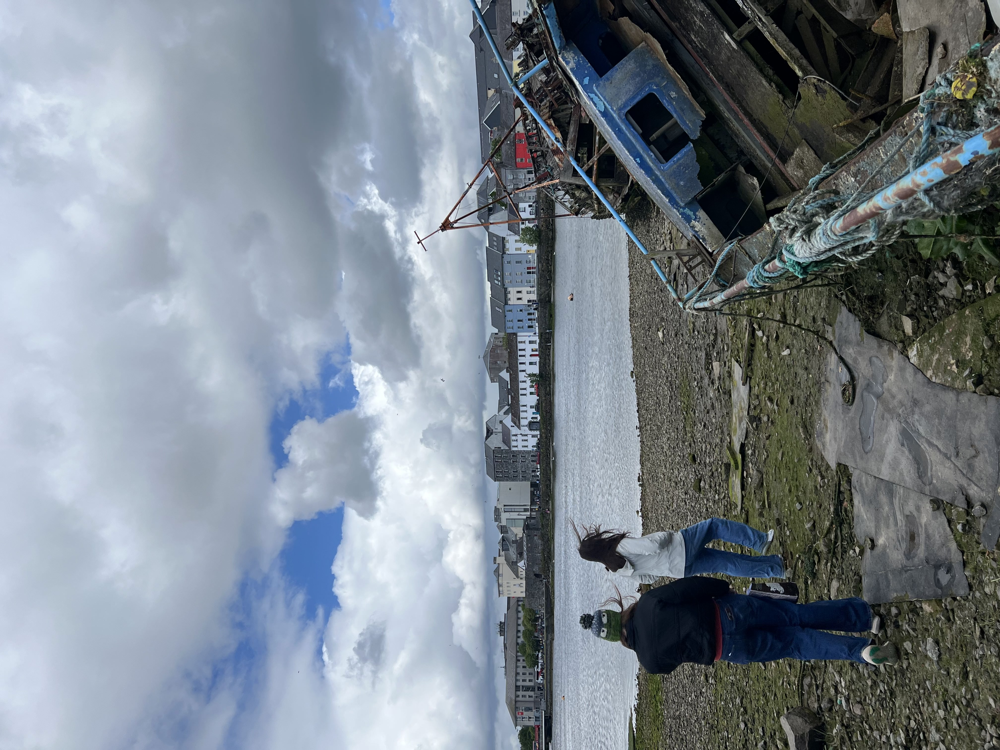
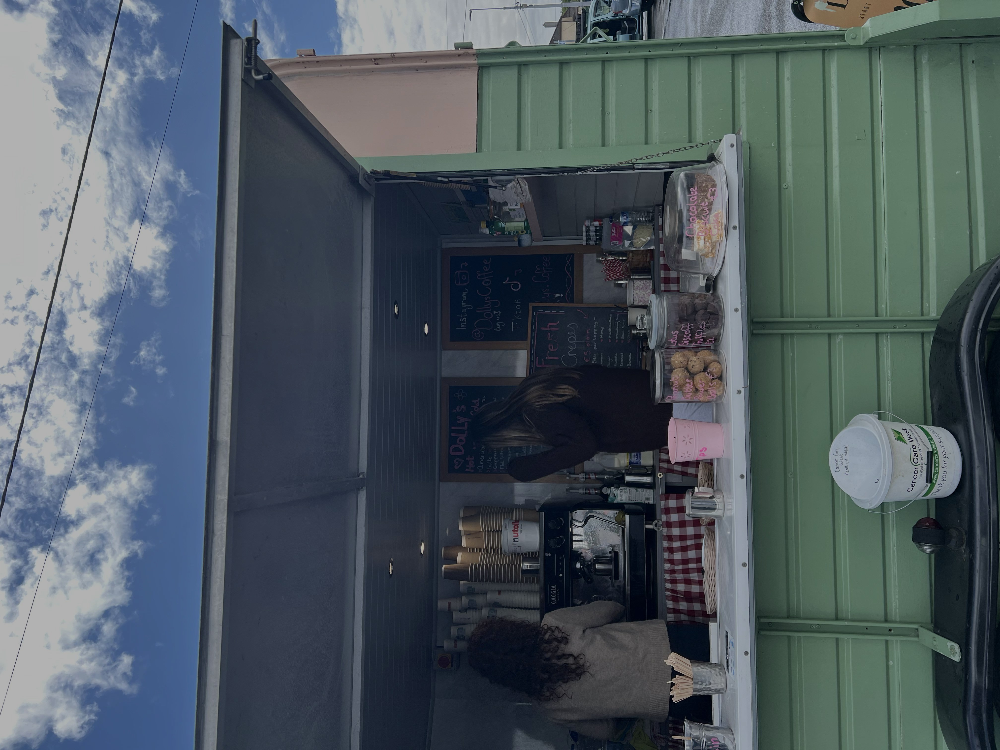
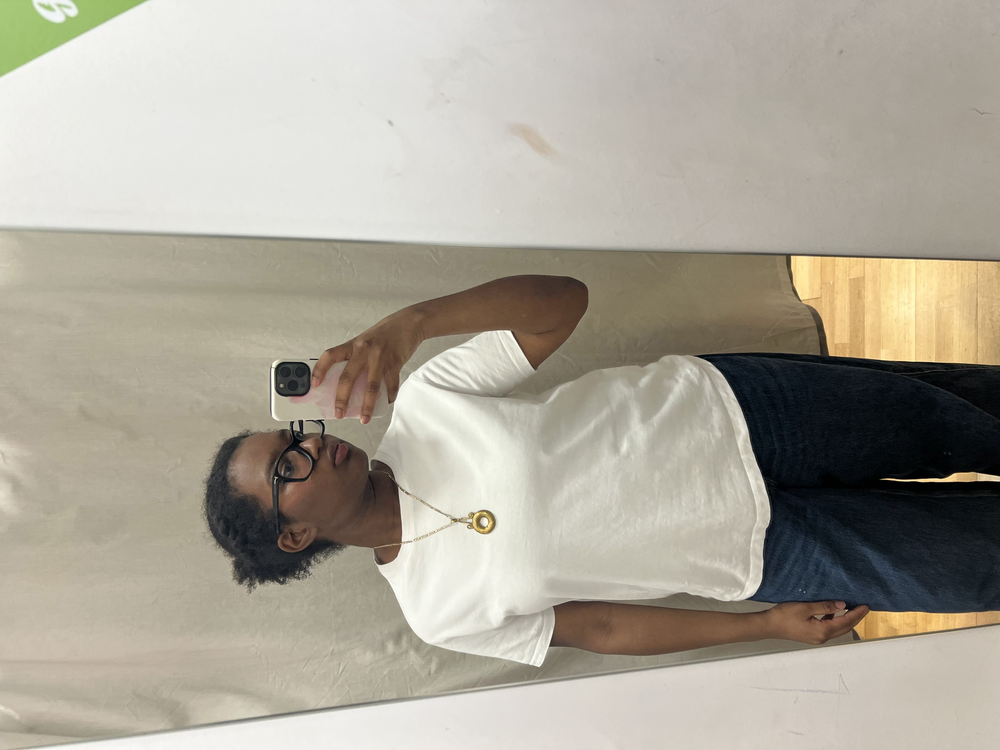

Galway
Our class went to Galway as a weekend trip. I had heard online that many people prefer it to Dublin, so I was very excited. Galway definitely has more of a small-town vibe compared to Dublin, making it less overwhelming. However, the city still gets lots of tourists, so some streets become unbearably crowded.


Galway had a lot to offer food-wise. One of my favorite meals was at Re Nao, a Chinese restaurant. They had a full vegan menu, and I ordered the tofu dumplings and liangpi salad. The tofu dumplings were alright and quite bland. The waiter definitely forgot about the liangpi salad, but it was worth the wait. It was definitely the highlight of my trip.
After eating at Re Nao, a couple of friends and I walked along the coast, inspecting a shipwreck along the way. I started to feel a bit cold and tired, so I ordered from a cute coffee truck by the water. Unfortunately, this was the worst coffee I have ever had. My cappuccino was suspiciously large, and the milk was unfrothed (kinda the whole point of a cappuccino). I felt better about my wasted Euros as we walked around more of the coast, admiring the dogs being walked.


Later that day, I visited a thrift store (or charity shop, as they call it here) and looked for some new sweaters. Everything was kinda ugly, but I did find a nice basic white tee shirt. The cashier was very nice and even made me take a perfume sample before leaving.

Finally, we ended off the day with dinner at the Pasta Factory. This was by far my favorite restaurant in Galway. They had lots of vegan options (more than the non-vegan options). I ordered spaghetti with marinara and "meat"balls and "parmesan," and it was delicious. The interior was also very cute!